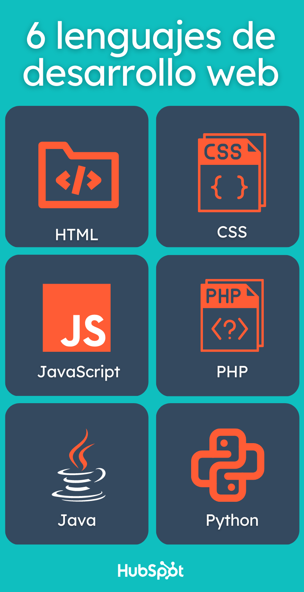

Blog sobre desarrollo Web
Qué es el desarrollo web
Se conoce como desarrollo web al proceso de crear y mantener un sitio web que sea funcional en internet, a través de diferentes lenguajes de programación, según el modelo y la parte de la página que corresponda. Cada sitio tiene una URL única que lo distingue de los demás en la red informática mundial.
Un sitio web puede clasificarse de diferentes formas. Para cuestiones de desarrollo web principalmente se divide en dos partes.
Frontend:
Es la parte que interactúa con el usuario, tanto en imagen como en función. Por ello está íntimamente relacionada con la experiencia del usuario (UX) y la interfaz de usuario (IU).
Backend. Se refiere a la parte que está en contacto directo con el servidor; es donde se aplica el código de programación para crear la estructura. Permanece en un segundo plano a cargo de la accesibilidad, actualización, bases de datos y cambios del sitio.

Diferencia entre diseño y desarrollo web
Una vez definido el frontend y el backend es más sencillo distinguir la diferencia entre ambos conceptos. El diseño web está relacionado con el frontend, pues se encarga de definir la apariencia estética del sitio web.
Los diseñadores web se enfocan en crear la apariencia y la experiencia del usuario en el sitio, utilizando una paleta de colores y herramientas como Adobe Photoshop, Sketch o Figma. En específico, se centran en aspectos como la imagen, gama de colores, cómo se verá el contenido, incluyendo texto, videos, fotografías, iconos, botones, menús, barras y demás elementos. Su objetivo es que el sitio sea fácil de entender y usar.
El diseño web corresponde a un sentido visual, ya que define la apariencia de cada una de las páginas que integren un sitio web, desde los iconos hasta imágenes o videos. Por su parte, el desarrollo web funge como un traductor del diseño para configurarlo en un lenguaje que entienda la red. El desarrollo web se enfoca en lo funcional; podrías tener un sitio navegable y útil aunque podría carecer de estética visual; por eso es tan importante que estas dos actividades se conjuguen.
6 lenguajes más utilizados en el desarrollo web

Si quieres conocer mas sobre el desarrollo web ingresa al siguiente link
Creacion de paginas Web